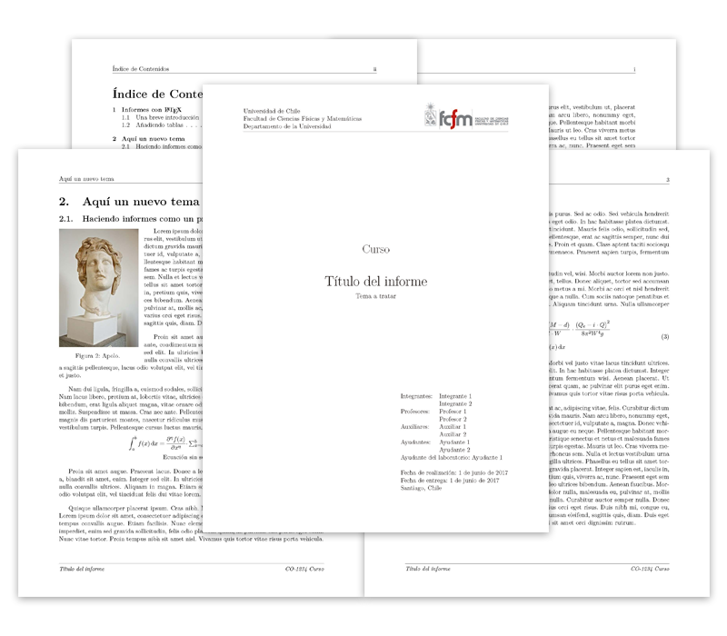
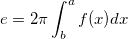
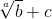
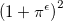
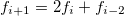
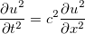
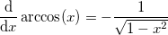
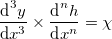
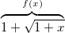

Ver Ejemplo
Ver Ejemplo  Descargar versión normal
Descargar versión compacta
Descargar versión normal
Descargar versión compacta
Template de Informe en Latex
- Empezando con el template
- Configurando el documento
- Añadiendo integrantes, profesores, auxiliares y fechas
- Añadiendo contenido al informe
- Configurar el template
- Links de interés
- Librerías utilizadas
- Autor
Este proyecto corresponde a un template para confeccionar geniales informes en
 , contiene múltiples funciones para insertar imágenes, fórmulas, párrafos y títulos de forma sencilla, sin tener que recurrir a las largas instrucciones
que ofrece Latex por defecto.
, contiene múltiples funciones para insertar imágenes, fórmulas, párrafos y títulos de forma sencilla, sin tener que recurrir a las largas instrucciones
que ofrece Latex por defecto.
Para crear un informe con este template debes primero editar la información del documento (título, nombre de la universidad, etc) en la sección INFORMACIÓN DEL DOCUMENTO (línea 21) del archivo principal, luego editar la tabla de datos de la portada en la sección INTEGRANTES, PROFESORES Y FECHAS (línea 38) y por último empezar a escribir tu documento en la sección del RESUMEN O ABSTRACT (línea 97) o en la sección principal del documento INICIO DEL DOCUMENTO (línea 108) al final del archivo principal main.tex.

Existe además una versión compacta en donde se encuentra todo el código en un sólo archivo si es que no prefieres los archivos por separado. Para ver más información sobre cómo utilizar las funciones exclusivas del template, o cómo configurar a gusto el template, visita el resto de las secciones de este manual!
También puedes consultar el template Template-Auxiliares para hacer los enunciados de tus auxiliares en
Configurando el documento
Para configurar el documento (título, nombre de la universidad, curso, etc.) se deben modificar las variables definidas en el bloque de INFORMACIÓN DEL DOCUMENTO al principio del archivo principal, estas variables son del estilo:
\def\nombreVariable {Valor}
Si por ejemplo tu informe no tiene un tema, debes dejar el valor en blanco, pero no eliminar la variable.
- \nombredelinforme: Título del informe.
- \temaatratar: Tema a tratar.
- \autordeldocumento: Nombre del autor o grupo. No es usado en la portada.
- \nombredelcurso: Curso - Ramo referido al informe.
- \codigodelcurso: Código del curso.
- \nombreuniversidad: Universidad, Instituto, etc.
- \nombrefacultad: Facultad relacionada a la Universidad, Instituto, etc.
- \departamentouniversidad: Departamento de la Universidad.
-
\imagendeldepartamento: Imagen del departamento o universidad a usar en la portada, estos se pueden encontrar en la carpeta
/images/departamentos/. Imágenes disponibles:
- adh: Área de Humanidades.
- das: Departamento de Astronomía.
- dcc: Departamento de Ciencias de la Computación.
- dfi: Departamento de Física.
- dgf: Departamento de Geofísica.
- dic: Departamento de Ingeniería Civil.
- die: Departamento de Ingeniería Eléctrica.
- dii: Departamento de Ingeniería Industrial.
- dii2: Departamento de Ingeniería Industrial (otra versión).
- dim: Departamento de Ingeniería Matemática.
- dimec: Departamento de Ingeniería Mecánica.
- diqbt: Departamento de Ingeniería Química y Biotecnología.
- fcfm: Facultad de Ciencias Físicas y Matemáticas.
- geo: Departamento de Geología.
- minas: Departamento de Ingeniería en Minas.
- uchile: Escudo de la Universidad de Chile.
- \imagendepartamentoescala: Escala de la imagen a usar.
- \localizacionuniversidad: Ciudad o región en donde se ubica la universidad o instituto.
Añadiendo integrantes, profesores, auxiliares y fechas
Esta información de la portada se encuentra en la sección INTEGRANTES, PROFESORES Y FECHAS del archivo principal (main.tex), en ella se encuentra una tabla la cual contiene la información de los integrantes, profesores, auxiliares, auxiliar de laboratorio, fecha de entrega y realización, etc.
Añadiendo contenido al informe
También es posible añadir fórmulas, párrafos, figuras y otros elementos de forma sencilla, utilizando funciones especiales definidas en el archivo lib/functions.tex.
-
Insertar párrafos
Para esto existen las siguientes funciones:
-
\newp: Sencilla forma de añadir un nuevo párrafo.
Este es un parrafo.
\newp Este es otro. -
\newpar{Párrafo}: Inserta un nuevo párrafo con un salto de linea al terminar.
\newpar{Este es un parrafo.}
\newpar{Este es otro.} -
\newparnl{Párrafo}: Inserta un nuevo párrafo sin un salto de linea al terminar.
\newparnl{Este es un parrafo sin salto de línea.}
\newparnl{Este es otro párrafo sin salto de línea.}
-
\newp: Sencilla forma de añadir un nuevo párrafo.
-
Añadir una imagen
Las funciones para añadir imágenes requieren del nombre de la imagen (el archivo almacenado en el directorio definido por la configuración \defaultimagefolder, por defecto la carpeta images/), sus parámetros y la leyenda (la cual es opcional).
Los parámetros pueden ser scale=0.5, width=5cm, width=50%, angle=45, etc.
-
\insertimage[Label (opcional)]{Archivo}{Parámetros}{Leyenda}: Inserta una simple imagen.
\insertimage[\label{img-1}]{ejemplos/test-image}{scale=1.0}{Descripción de la imagen}
-
\insertimageboxed[Label (opcional)]{Archivo}{Parámetros}{Leyenda}: Inserta una imagen recuadrada.
\insertimageboxed[]{ejemplos/test-image}{scale=0.5}{}
-
\insertdoubleimage[Label (opcional)]{Dirección de la imagen 1}{Parámetros 1}{Leyenda 1}{Dirección de la imagen 2}{Parámetros 2}{Leyenda 2}{Leyenda general}:
Inserta dos imágenes en un sólo elemento.
\insertdoubleimage[\label{img-double-1}]{ejemplos/test-image}{scale=0.4}{Descripción A}{ejemplos/test-image-wrap}{width=5cm}{Descripción B}{Descripción general de las imágenes}
-
\insertdoubleeqimage[Label (opcional)]{Dirección de la imagen 1}{Leyenda 1}{Dirección de la imagen 2}{Leyenda 2}{Parámetros generales}{Leyenda general}:
Inserta dos imágenes en un sólo elemento utilizando los mismos parámetros (estilos de imagen).
\insertdoubleeqimage[\label{img-equal}]{ejemplos/test-image}{Descripción A}{ejemplos/test-image-wrap}{Descripción B}{height=5cm}{Descripción general de las imágenes}
-
\inserttripleimage[Label (opcional)]{Dirección de la imagen 1}{Parámetros 1}{Dirección de la imagen 2}{Parámetros 2}{Dirección de la imagen 3}{Parámetros 3}{Leyenda general}:
Inserta tres imágenes en un sólo elemento.
\inserttripleimage[\label{img-triple-1}]{ejemplos/test-image.jpg}{scale=0.4}{ejemplos/test-image-2.png}{height=6cm}{ejemplos/test-image-3.pdf}{width=3cm}{Descripción general}
-
\inserttripleeqimage[Label (opcional)]{Dirección de la imagen 1}{Dirección de la imagen 2}{Dirección de la imagen 3}{Parámetros generales}{Leyenda general}:
Inserta tres imágenes en un sólo elemento utilizando los mismos parámetros (estilos de imagen).
\inserttripleeqimage[\label{img-triple}]{ejemplos/test-image.jpg}{ejemplos/test-image-2.png}{ejemplos/test-image-3.pdf}{scale=0.6}{Descripción general}
-
\insertquadimage[Label (opcional)]{Dirección de la imagen 1}{Dirección de la imagen 2}{Dirección de la imagen 3}{Dirección de la imagen 4}{Parámetros globales}{Leyenda general}:
Inserta cuatro imágenes en un sólo elemento.
\insertquadimage[\label{img-quad-1}]{ejemplos/test-image.jpg}{ejemplos/test-image-2.jpg}{ejemplos/test-image-3.jpg}{ejemplos/test-image-4.jpg}{width=6cm}{Descripción general}
-
\insertpentaimage[Label (opcional)]{Dirección de la imagen 1}{Dirección de la imagen 2}{Dirección de la imagen 3}{Dirección de la imagen 4}{Dirección de la imagen 5}{Parámetros globales}{Leyenda general}:
Inserta cinco imágenes en un sólo elemento.
\insertpentaimage[\label{img-penta-1}]{ejemplos/test-image.jpg}{ejemplos/test-image-2.jpg}{ejemplos/test-image-3.jpg}{ejemplos/test-image-4.jpg}{ejemplos/test-image-5.jpg}{scale=0.7}{Descripción general}
-
\inserthexaimage[Label (opcional)]{Dirección de la imagen 1}{Dirección de la imagen 2}{Dirección de la imagen 3}{Dirección de la imagen 4}{Dirección de la imagen 5}{Dirección de la imagen 6}{Parámetros globales}{Leyenda general}:
Inserta seis imágenes en un sólo elemento.
\inserthexaimage[\label{img-hexa-1}]{ejemplos/test-image.jpg}{ejemplos/test-image-2.jpg}{ejemplos/test-image-3.jpg}{ejemplos/test-image-4.jpg}{ejemplos/test-image-5.jpg}{ejemplos/test-image-6.jpg}{width=4cm, height=5cm}{Descripción general}
-
\insertimageleft[Label (opcional)]{Archivo}{Ancho de la imagen}{Número de columnas a usar}{Leyenda}: Inserta una
imagen alineada a la izquierda, flotante.
\insertimageleft[\label{img-left-1}]{ejemplos/test-image}{0.25}{15}{Descripción}
-
\insertimageright[Label (opcional)]{Archivo}{Escala}{Número de columnas a usar}{Leyenda}: Inserta una imagen alineada
a la derecha, flotante.
\insertimageright[]{ejemplos/test-image}{0.21}{22}{Descripción}
-
\insertimage[Label (opcional)]{Archivo}{Parámetros}{Leyenda}: Inserta una simple imagen.
-
Insertar una fórmula en el documento
Las funciones existentes consideran tanto la fórmula en sí (escrita en bruto, sin los $) como la leyenda para las funciones tipo captioned. Todas las siguientes funciones tienen su versión anum la cual no enumera la ecuación, por ejemplo: \insertequationanum{Fórmula} o \insertalignanum{Fórmula}.
-
\insertequation[Label (opcional)]{Fórmula}: Inserta una fórmula.
\insertequation[\label{eqn-1}]{e = 2\pi \int^{a}_{b} f(x)dx}

-
\insertequationcaptioned[Label (opcional)]{Fórmula}{Leyenda}: Inserta una fórmula con leyenda.
\insertequationcaptioned[\label{formula-1}]{\frac{1}{\pi \nu 4 \pow{t}{4}}}{Título de fórmula}

-
\insertgather{Fórmula}: Inserta una fórmula con el entorno gather, permite insertar nuevas líneas con \\ y centra todas las fórmulas. Cada nueva línea tiene un propio número de ecuación. No se pueden usar \label.
\insertgather{\Delta = \begin{bmatrix}y&x\\z&w\end{bmatrix}\cdot f(x)}

- \insertgathercaptioned{Fórmula}{Leyenda}: Inserta una fórmula con leyenda en el entorno gather.
-
\insertgathered[Label (opcional)]{Fórmula}{Leyenda}: Inserta una fórmula con leyenda en el entorno gathered, permite insertar nuevas líneas con \\ y centra todas las fórmulas. Todas las líneas tienen sólo 1 número de ecuación por lo que esta puede tener etiqueta o un \label.
\insertgathered[\label{formula-4}]{\iint_{a}^{b} f(y) \dy}

- \insertgatheredcaptioned[Label (opcional)]{Fórmula}{Leyenda}: Inserta una fórmula con leyenda en el entorno gathered.
-
\insertalign{Fórmula}: Inserta una fórmula con el entorno align el cual permite insertar nuevas líneas con \\ y ajusta un alineado especial con respecto a
los = de cada fórmula. Cada nueva línea tiene un propio número de ecuación. No se pueden usar \label.
\insertalign{F(\vec{f},y, y') = \widehat{<\vec{f},y>} \times y'}
- \insertaligncaptioned{Fórmula}{Leyenda}: Inserta una fórmula con leyenda en el entorno align.
-
\insertaligned[Label (opcional)]{Fórmula}: Inserta una fórmula con el entorno aligned el cual permite insertar nuevas líneas, y ajusta un alineado especial con respecto a
los = de cada fórmula. Todas las líneas tienen sólo 1 número de ecuación por lo que esta puede tener etiqueta o un \label.
\insertaligned[\label{formula-5}]{\sqrt[a]{b} + c}

- \insertalignedcaptioned[Label (opcional)]{Fórmula}{Leyenda}: Inserta una fórmula con leyenda en el entorno aligned.
-
\insertequation[Label (opcional)]{Fórmula}: Inserta una fórmula.
-
Expresiones matemáticas
Existen varias funciones para añadir expresiones matemáticas de forma sencilla, estas se pueden usar tanto dentro como fuera de una fórmula (por ejemplo se pueden usar dentro de un párrafo sin la necesidad de hacer $\...$).
-
\abs{a}: Valor absoluto de a.
\abs{ x + y }
-
\norm{a}: Norma de a.
La norma de z es \norm{ z }
-
\pow{a}{b}: Forma simplificada de añadir una potencia del tipo a^b.
\pow{ (1 + \pow{\pi}{\epsilon}) }{2}

-
\lpow{a}{b}: Forma simplificada de añadir una sub potencia del tipo a_b.
\lpow{f}{i+1} = 2 \lpow{f}{i} + \lpow{f}{i-2}

-
\fracpartial{a}{b}: Crea una fracción de derivadas parciales del estilo ∂a/∂b.
f(x) = \fracpartial{g}{x}
\lpow{h}{y} = 2 + \fracpartial{}{y} h

-
\fracdpartial{a}{b}: Crea una fracción de derivadas parciales al cuadrado al estilo ∂^2 a/∂b^2.
\fracdpartial{u}{t} = \pow{c}{2} \fracdpartial{u}{x}

-
\fracnpartial{a}{b}{c}: Crea una fracción de derivadas parciales a la n al estilo ∂^c a/∂b^2. \frac{\partial {f}^{n+m}}{\partial {x}^{n+m}} =
\fracnpartial{f}{x}{n+m} = \widehat{\fracnpartial{h}{x}{n} + \fracnpartial{g}{x}{m}}

-
\fracderivat{a}{b}: Crea una fracción de derivadas del estilo da/db.
\fracderivat{}{x}\arccos(x) = -{\frac{1}{\sqrt{ 1 - \pow{x}{2} }}

-
\fracdderivat{a}{b}: Crea una fracción de derivadas al cuadrado al estilo d^2 a/db^2.
m \fracdderivat{x}{t} + kx = 0
-
\fracnderivat{a}{b}{c}: Crea una fracción de derivadas a la n al estilo d^c a/db^2.
\fracnderivat{y}{x}{3} \times \fracnderivat{h}{x}{n} = \chi

-
\topequal{a}{b}:Crea una llave sobre el elemento a con valor b.
\topequal{1 + \sqrt{1+x}}{f(x)}

-
\underequal{a}{b}:Crea una llave bajo el elemento a con valor b.
\pi + \underequal{1 - \frac{1}{e}}{e \approx 2.718}

-
\topsequal{a}{b}:Crea una llave rectangular sobre el elemento a con valor b.
\topsequal{ 1+x+\ldots+\pow{x}{n} }{x \in \Re} = \sum_{i=0}^{n}\pow{x}{i}

-
\undersequal{a}{b}:Crea una llave rectangular bajo el elemento a con valor b.
\lim_{n} \pow{2}{n} \undersequal{ \sqrt{2 - \sqrt{2+ \ldots + \sqrt{2}}} }{n} = \pi

-
\abs{a}: Valor absoluto de a.
-
Insertar secciones sin número y sin aparecer en el índice
También pueden añadirse secciones no numeradas (anum) que aparezcan en el índice o no (noi). Para ello existen las siguientes funciones:
- \sectionanum{Título}: Inserta una sección sin número.
- \subsectionanum{Subtítulo}: Inserta una subsección sin número.
- \subsubsectionanum{Sub-subtítulo}: Inserta una sub-subsección sin número.
- \sectionanumnoi{Título}: Inserta una sección sin número y sin que aparezca en el índice.
- \subsectionanumnoi{Subtítulo}: Inserta una subsección sin número y sin que aparezca en el índice.
- \subsubsectionanumnoi{Sub-subtítulo}: Inserta una sub-subsección sin número y sin que aparezca en el índice.
-
Otras funciones
- \insertemail{Correo}: Inserta un link de un correo con formato y dirección web válida.
- \insertemptypage: Inserta una página vacía (sin headers ni contenido).
- \insertindextitle{Título}{Margen vertical (opcional) [px]}: Inserta un título sólo en el índice. Nota: para utilizar esta función se debe haber creado una sección antes.
- \quotes{Texto}: Inserta un texto entre comillas.
- \sectionanumheadless{Título}: Inserta una sección sin número y sin aparecer en el header del informe.
- \sectionanumheadlessnoi{Título}: Inserta una sección sin número, sin aparecer en el header del informe y sin aparecer en el índice.
- \setcaptionmargincm{Margen}: Modifica el margen izquierdo/derecho de los caption medido en centímetros.
Configurar el template
También se pueden modificar los márgenes de la página, el estilo de referencia a usar, los márgenes de los títulos de tablas y figuras (caption), el tamaño de los títulos de las secciones, etc. Estas configuraciones se encuentran en el archivo lib/config.tex y son importadas en el bloque de CONFIGURACIONES en el archivo principal.
Las configuraciones disponibles son las siguientes:
-
Configuraciones generales
- \defaultimagefolder: Directorio de las imágenes, sólo utilizado por las funciones que insertan figuras.
- \defaultinterline: Tamaño del interlineado.
- \defaultnewlinesize: Tamaño del salto de línea en pt.
- \numberedequation: Muestra el número en las ecuaciones insertadas con \insert....
- \showborderonlinks: Reemplaza el color de un link por un recuadro de color.
- \showdotontitles: Muestra un punto en cada número de sección, subsección y sub-subsección.
- \romanpageuppercase: Páginas en número romano (abstract-índice) en mayúsculas.
- \tablepadding: Padding de las tablas.
-
Configuración de las leyendas
- \captionbottommargin: Margen inferior de las leyendas, en pt.
- \captionlessmarginimage: Margen inferior si no hay caption en figuras, en centímetros.
- \captionlrmargin: Márgen izquierdo (left) y derecho (right) de las leyendas, en centímetros.
- \captiontextbold: Etiquetas (Figura,Tabla,etc.) de la leyenda en negrita.
- \captiontopmargin: Margen superior de los caption, en pt.
- \centeredcaption: Leyenda centrada al tener varias líneas.
- \figurecaptiontop: Establece la leyenda encima de las imágenes.
- \showsectiononcaption: Indica si se agrega el número de la sección en la leyenda.
-
Configuración del índice
- \indextitlemargin: Margen superior en los títulos de los índices (insertado con \insertindextitle).
- \indexdepth: Profundidad del índice.
- \showindex: Muestra la página de índice.
- \showindexofcontents: Muestra la lista de contenidos.
- \showindexoffigures: Muestra la lista de figuras en el índice.
- \showindexofcode: Muestra la lista de códigos fuente en el índice.
- \showindexoftables: Muestra la lista de tablas en el índice.
-
Configurar los colores del documento
- \captioncolor: Color de la etiqueta (Figura, Tabla, Código) en la leyenda de los objetos.
- \captiontextcolor: Color de la leyenda de los objetos.
- \citecolor: Color del número de la referencia o cita.
- \highlightcolor: Color del subrayado con \hl{text}.
- \indextitlecolor: Color de los títulos del índice.
- \linkcolor: Color de los enlaces del documento, entiendase por números de figuras, entradas del índice, etc.
- \maintextcolor: Color del texto del documento, afecta al color de los títulos, párrafos, líneas, tablas, etc.
- \portraittitlecolor: Color de los títulos de la portada.
- \subsubtitlecolor: Color de los sub-subtítulos.
- \subtitlecolor: Color de los subtítulos.
- \tablelinecolor: Color de las líneas de las tablas.
- \titlecolor: Color de los títulos.
- \urlcolor: Color de los enlaces http:// del documento insertados con \url y \href.
-
Configuración de las figuras
- \marginbottomimages: Margen inferior de las figuras, en centímetros.
- \marginfloatimages: Margen superior de las figuras flotantes (insertadas con \insertimageleft o \insertimageright), en pt.
- \margintopimages: Margen superior de las figuras, en centímetros.
-
Configuración de referencias
- \referencenumsection: Considera las referencias como sección.
- \twocolumnreferences: Referencias en dos columnas.
- \typereference: Tipo de referencias, por defecto se usa la norma APA.
-
Configuración de portada, header y footer
- \gradecodeonportrait: Muestra el código del curso en la portada.
- \showfooter: Muestra el footer (nombre informe y curso).
- \showheadertitle: Muestra el título de la sección en el header.
-
Márgenes de la página
- \firstpagemargintop: Margen superior de la portada en centímetros.
- \pagemarginbottom: Margen inferior de las páginas en centímetros.
- \pagemarginleft: Margen izquierdo de las páginas en centímetros.
- \pagemarginright: Margen derecho de las páginas en centímetros.
- \pagemargintop: Margen superior de las páginas en centímetros.
-
Estilo y tamaño de los títulos
- \fontsizesubsubtitle: Tamaño sub-subtítulos.
- \fontsizesubtitle: Tamaño subtítulos.
- \fontsizetitle: Tamaño títulos.
- \fontsizetitlei: Tamaño títulos en el índice.
- \stylesubsubtitle: Estilo sub-subtítulos.
- \stylesubtitle: Estilo subtítulos.
- \styletitle: Estilo títulos.
- \styletitlei: Estilo títulos en el índice.
-
Nombres de objetos
- \nameabstract: Nombre del resumen-abstract.
- \nameportraitpage: Nombre de la primera página (portada) en el pdf.
- \namereferences: Nombre de la sección de referencias.
- \nomltcont: Nombre del índice de contenidos.
- \nomltfigure: Nombre de la lista de figuras.
- \nomltsrc: Nombre de la lista de código fuente.
- \nomlttable: Nombre de la lista de tablas.
- \nomltwsrc: Etiqueta leyenda del código fuente.
- \nomltwfigure: Etiqueta leyenda de las figuras.
- \nomltwtable: Etiqueta leyenda de las tablas.
Links de interés
A continuación se presentan una lista de links útiles para el uso de Latex:
-
Template Auxiliares en : http://ppizarror.com/Template-Auxiliares/
- Manual para usar Latex: https://es.sharelatex.com/learn
-
Plugin para expotar tablas desde Excel: https://www.ctan.org/pkg/excel2latex
- Descargar el plugin y extraer el zip
-
Pegar los contenidos del zip en C:\Users\UserName\AppData\Roaming\Microsoft\AddIns
- Si no encuentras la carpeta Appdata: Pulsa +R → Escribe appdata → Aceptar (ejemplo)
- Abrir el archivo Excel2LaTeX.xla con Excel
- Abrir el plugin ubicado en Complementos → Convert Table to Latex
- Configurar el plugin a gusto (ejemplo)
-
Latex online: https://www.sharelatex.com/
- Para usar el template: Menú principal → New project → Upload project → Seleccionar el .zip descargado del template
{kind=link}
{kind=link}
Librerías utilizadas
Las librerías se listan en el archivo lib/imports.tex y se cargan en la sección LIBRERÍAS INDEPENDIENTES y LIBRERÍAS DEPENDIENTES, en librerías independientes se cargan las librerías que, como bien dice su nombre, no dependen de la previa importación de otras, o que su importación no genera algún error.
Las librerías utilizadas por el template son:
- array: Añade características a las tablas.
- amsmath: Librería matemática.
- amssymb: Librería matemática.
- array: Añade características a las tablas.
- babel: Soporte para idiomas.
- bigstrut: Permite añadir líneas en tablas.
- booktabs: Permite manejar elementos visuales en tablas.
- cancel: Cancelar términos en fórmulas.
- caption: Leyendas (o títulos de objetos).
- chngcntr: Agrega números de secciones a las leyendas [dependiente].
- color: Colores.
- colortbl: Colores en las tablas.
- datetime: Fechas.
- enumitem: Permite enumerar ítemes.
- epstopdf: Convierte archivos .eps a pdf [dependiente].
- etoolbox: Herramientas varias del compilador [dependiente].
- fancyhdr: Encabezados y pié de páginas.
- footmisc: Elimina la barra vertical de las notas al pié de página.
- float: Administrador de posiciones de objetos.
- floatrow: Administración de floats.
- geometry: Dimensiones y geometría del documento.
- gensymb: Simbología común.
- graphicx: Propiedades extra para los gráficos.
- hyperref: Permite añadir enlaces y referencias [dependiente].
- ifthen: Permite el manejo de condicionales.
- mathtools: Permite utilizar notaciones matemáticas avanzadas.
- multicol: Múltiples columnas.
- multirow: Añade nuevas opciones a las tablas [dependiente].
- needspace: Maneja espacios en páginas.
- notoccite: Desactiva las citas en el índice.
- pdfpages: Permite administrar páginas en pdf.
- lipsum: Permite crear textos dummy.
- longtable: Permite utilizar tablas en varias hojas.
- listings: Permite añadir código fuente.
- rotating: Permite rotación de objetos.
- sectsty: Cambia el estilo de los títulos.
- setspace: Cambia el espacio entre líneas.
- siunitx: Permite añadir unidades del sistema internacional.
- subfig: Permite agrupar imágenes.
- textcomp: Simbología.
- totalcount: Permite contar elementos.
- ulem: Permite cachar, subrayar, etc.
- url: Permite añadir enlaces.
- wasysym: Contiene caracteres misceláneos.
- wrapfig: Permite comprimir imágenes.
- xcolor: Paquete de colores avanzado.
- xspace: Adminsitra espacios en párrafos y líneas.
Lista de cambios
Autor
Pablo Pizarro R. 2016-2017.
Si tienes alguna sugerencia envíame un correo a: pablo.pizarro@ing.uchile.cl.